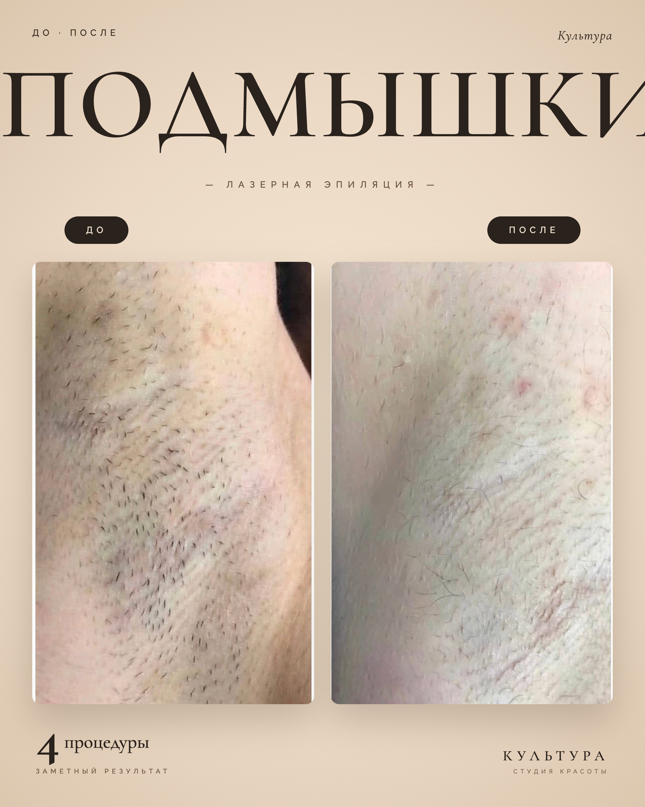
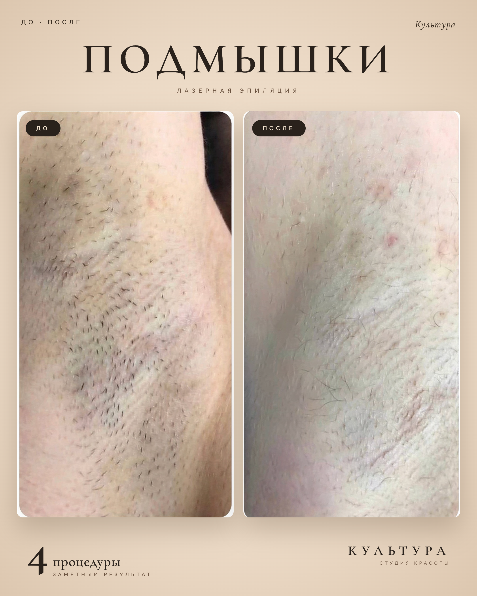
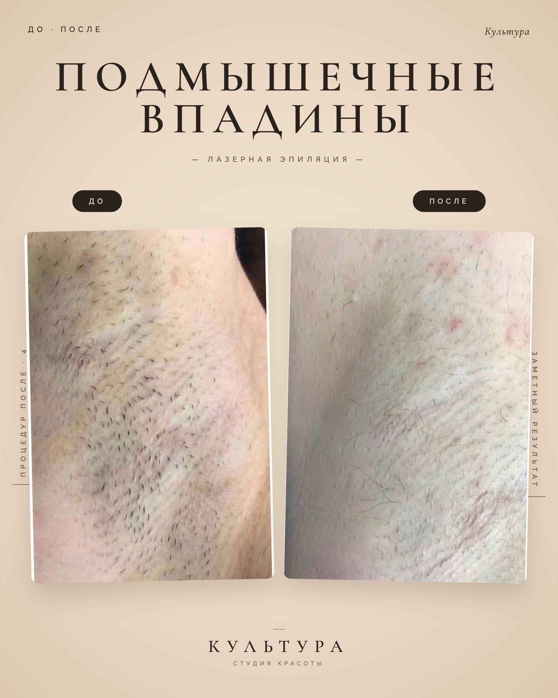
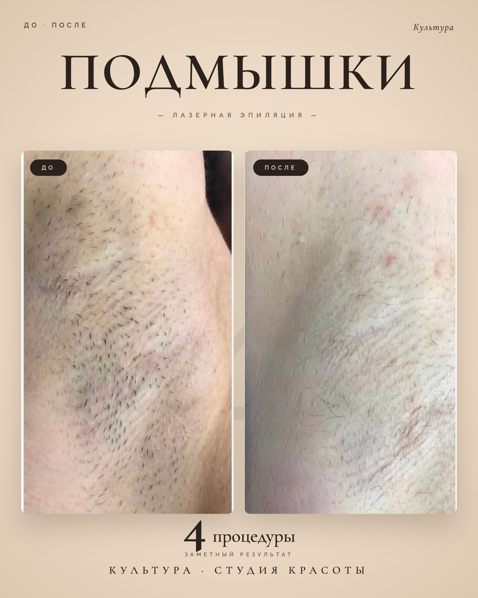
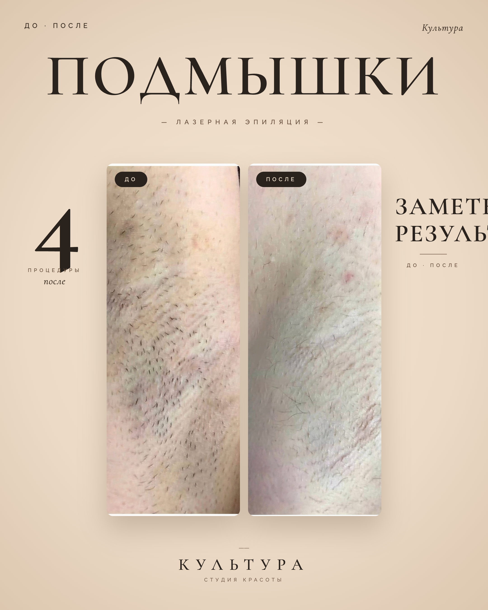

×
Старый — для сравнения
Тот же стиль кремовый фон + сериф, но мелкие фотки в центре, мелкий заголовок, нечитаемый вертикальный текст по бокам, пустота между фотками 100+px. Контраст слабый — armpit_4.
переделываем



